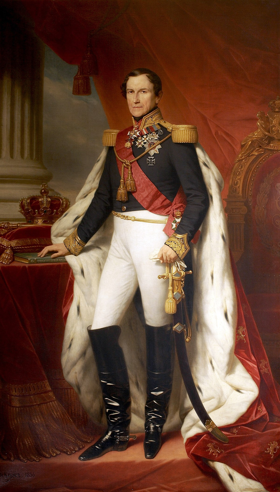
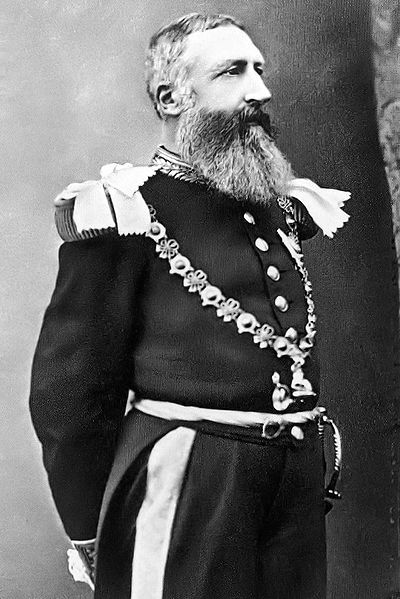
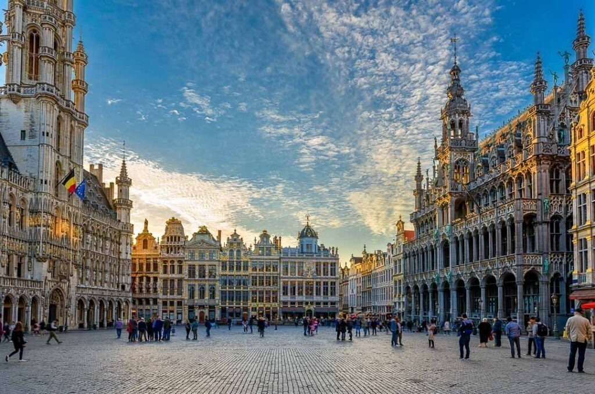

1 CONTEXTO HISTÓRICO
Após obter a independência dos Países Baixos em 1830, a Bélgica tornou-se uma monarquia constitucional com Leopoldo I como seu primeiro rei. Nos primeiros anos de sua independência, a Bélgica concentrou-se em construir uma economia forte e estabilidade política, bem como em expandir suas fronteiras por meio de aquisições territoriais. (BRITANNICA, 2023)
Como o primeiro rei da Bélgica independente, Leopoldo I desempenhou um papel fundamental na promoção da unificação cultural e social do país. Ele trabalhou para superar as divisões linguísticas e religiosas que haviam surgido durante os anos de domínio holandês e incentivou o desenvolvimento de uma identidade nacional. (BRITANNICA, 2023)
Ele também trabalhou para estabelecer uma monarquia constitucional estável e promover políticas domésticas que apoiariam o crescimento econômico e manteriam a lei e a ordem. Além disso, Leopoldo I desempenhou um papel ativo nas relações internacionais, trabalhando para manter a neutralidade da Bélgica em conflitos internacionais e promover seus interesses no exterior. (BRITANNICA, 2023)
Em 1965, Leopoldo I morreu e seu filho, Leopoldo II assumiu o trono. Durante seu reinado como Rei da Bélgica, Leopoldo II concentrou-se na expansão territorial e colonização, particularmente na África, com o estabelecimento do Estado Livre do Congo. (BRITANNICA, 2023)
Figura 1 - Rei Leopoldo I
Fonte: WIKIPEDIA, 2023
2 GENOCÍDIO
Domesticamente, as tensões entre as comunidades linguísticas e culturais continuaram a ferver, mas Leopoldo II trabalhou para modernizar a infraestrutura, levando a um crescimento econômico significativo e modernização do país. (EXPATICA, 2023)
No entanto, suas políticas coloniais no Congo foram fortemente criticadas pela exploração e maus-tratos ao povo congolês. Seu reinado foi marcado por conquistas significativas e controvérsias. (EXPATICA, 2023)
O rei Leopoldo II da Bélgica tratou brutalmente o povo congolês durante seu controle pessoal do Estado Livre do Congo de 1885 a 1908. Ele explorou os recursos naturais da região e obrigou os congoleses a trabalhar em condições duras e desumanas para extrair borracha, marfim e outros bens valiosos. (EXPATICA, 2023)
Os congoleses que não conseguiram atender às cotas de produção ou resistiram ao trabalho forçado eram frequentemente submetidos a violência horrível, incluindo amputações e outras mutilações. Além disso, o povo congolês foi submetido a doenças, fome e falta de acesso a cuidados médicos básicos e educação. (EXPATICA, 2023)
Em 1908, o governo belga assumiu o controle do Estado Livre do Congo, anteriormente governado pelo Rei Leopoldo II como propriedade pessoal. Embora algumas melhorias tenham sido feitas nas condições enfrentadas pelo povo congolês, eles ainda foram submetidos a um tratamento brutal durante as décadas subsequentes, até a obtenção de sua independência em 1960. (EXPATICA, 2023)
Figura 2 - Rei Leopoldo II
Fonte: NATIONAL GRAPHICS, 2023
3 BÉLGICA ATUALMENTE
Observado no próprio site da embaixada belga dos EUA, A Bélgica experimentou um milagre econômico após a Segunda Guerra Mundial, seguido por um declínio nos anos 70 e 80.Entretanto, reformas econômicas foram implementadas na década de 1990, levando a uma economia mais forte.
Esse desenvolvimento foi resultado do investimento em novas indústrias, tais como a de aço, química e petroquímica, que impulsionaram a produção industrial e levaram a uma significativa melhoria dos padrões de vida dos belgas, com melhorias no acesso à saúde e à educação.
Além disso, o país passou por diversas mudanças sociais, incluindo a ampliação do sufrágio universal e reformas no sistema de assistência social, com a expansão do Estado de bem-estar social. A Bélgica também experimentou um aumento da diversidade cultural, com a chegada de imigrantes de outros países europeus, em especial da Itália e da Espanha.
Na esfera política, a Bélgica inicia o processo de se tornar um estado federal com a criação de três regiões: Flandres, Valônia e Bruxelas, descentralizando o governo e ampliando o poder das regiões. Por volta deste período, novos partidos políticos surgiram, especialmente na esquerda, desafiando a tradicional hegemonia do Partido Católico.
No contexto internacional, a Bélgica desempenhou um papel importante na formação da União Europeia nas décadas de 1950 e 1960, com sua participação na criação da Comunidade Europeia do Carvão e do Aço em 1951. O país também se tornou um membro ativo da OTAN e de outras organizações internacionais.
De 1960 até os dias atuais, a Bélgica continuou a evoluir e se desenvolver, tanto economicamente quanto socialmente. Nas décadas de 1960 e 1970, a Bélgica experimentou um crescimento e prosperidade significativos, impulsionados pela sua participação na Comunidade Econômica Europeia (CEE), atual União Europeia (UE).
Nos últimos anos, a Bélgica enfrentou vários desafios, incluindo o aumento do nacionalismo e a crescente divisão entre a comunidade flamenga falante do idioma holandes e a comunidade valona falante de francês. Isso levou a instabilidade política e dificuldades na formação de um governo estável, com a Bélgica passando por períodos prolongados sem governo em 2010-2011.
A Bélgica também foi afetada pela crise contínua dos refugiados e pela ameaça do terrorismo, com vários ataques de alto perfil ocorrendo no país nos últimos anos. Em resposta, o governo implementou medidas de segurança mais rigorosas e aumentou a vigilância.
Em termos de economia, a Bélgica atual possui uma economia altamente desenvolvida e diversificada, com forte foco em serviços e manufatura. O país é lar de várias corporações multinacionais e é um importante centro de comércio e finanças internacionais.
Figura 3 - Bruxelas
Fonte: DESTINOS NOTAVEIS, 2016